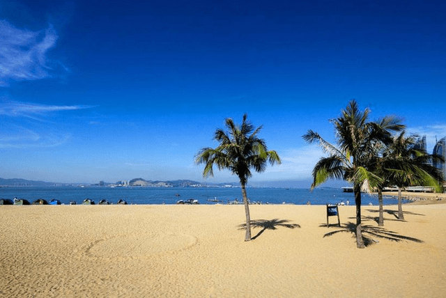

椰风寨
|  |
景点介绍椰风寨坐落于厦门环岛路沿岸海边，占地面积近万平方米，全园共分为六大功能区:海滨游乐场、新帝乐园、4D动感影院、海边浴场、水上运动区、美食广场，是厦门首个集户外游乐、餐饮休闲、水上运动、沙滩拓展为一体的综合性休闲旅游中心。厦门岛自90年代中期开始，沿海岸分段建设环岛路，建成约43公里，路宽45-60米，依次分为机动车道、非机动车道和人行道，路旁靠海的一侧有80-100米的绿化带，其中，从厦大白城至会展中心约10公里的路段最为美观，评定为厦门新二十名景之一，称为"东环望海"。椰风寨就是"东环望海"景区中黄厝海滨上的一个点。 椰风寨始建于1997年，这里的建筑外型像金字塔，耸立在蓝天碧水之间十分惹眼，与金门岛仅一水之隔的厦门海滨椰风寨风光独特，还有不少稀有的植物，每天都有各地游人来此观光，享受南国海岛的风情。 |